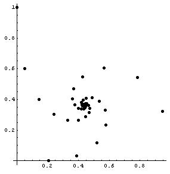
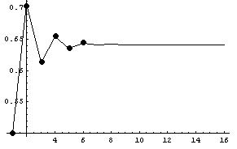

2. Patterns in graphs
Linear graphs (straight line graphs) -see chapter 6 and Daly's graph of October 161. Graph x + y = 7 . Add two numbers to get 7. 1 and 6, 5 and 2, 7 and 0. We'll put these numbers in the table at the right. Then plot these points on the graph. The x-number goes along the x-axis to the right (or left). The y-number goes up (or down). See how we plot those 3 points on the graph.
Is there a pattern to the x's you've plotted? What are the two numbers for the blue point? the red point? Do these add to 7? These questions get us into fractions and negative numbers.
2. Graph: 2x + 3 = y What patterns do you see? Where does the 2 show up on the graph? Where does the 3 show up on the graph? (see chapter 6 and chapter 14 - slope of tangent and derivative).
non-linear graphs
3. parabola (chapter 6)
The Peg Game or The Shuttle Puzzle leads to graphing a parabola. Also
4.
circle (chapter 6)
5.
ellipse (chapter 6) & See “math
in bubbles”
6.
Hyperbola
- from the hinged mirrors in chapter 6
7. Sheri works on the Tower Puzzle
which leads to the graph of an exponential
functions (see also chapter
6)
8.
Trig functions: See Don's new , unfinished
book, "Trig
Functions for Young people"
9. Graphs of iterations
in Maura's work with the function 5 + x/2 (chapter
8).

12. Graph successive
pairs of numbers of the iteration of y = 5 - 6/x (an
hyperbola, chapter 8).
13. Graph of SPIRALS
r = et*cot(79.5*Pi/360) . The polar graph was done in Mathematica, using the following
command: PolarPlot[E^(x*Cot[79.5*Pi/180]),{x,0,2*Pi}];
Notice
that in a 360°
turn of the curve at the right, it goes from 1 to about 3.2, which is same as
the growth of the Nautilus shell which students have found (chapter
6).
14. On a geoboard graph the number of nails touching a rubber band vs. the area within the shape. (see chapter 13).
15. Graph how lengths, area and volumes grow (chapter 6)
16. Graph the S.A./Vol ratio of rods to explain why rodents are nocturnal animals (chapter 6)
17. Graph y=x2 and find the area under the curve, leading to the integral (see chapter 13).
18. Graph the length of a wire vs. its resistance.
19. Graph the ratios of consecutive Fibonacci numbers to get an infinite sequence which approaches the golden mean as the limit.
20. The graph of (1 + 1/n)n by Geoffrey in Mathematica® . ( also see chapter 11)

21. Graph of
 with the points connected on the complex plane
with the points connected on the complex plane

22. Graph of
with the points not connected on the complex plane.

23. Graph of the sequence formed by the polypowers 

which converges to 0.64118650561396046518...
24. Graph of the limits of the sequences formed by the
polypowers, like

which converge to two numbers for each denominator. For the denominator equal to 2 for example, as shown above, the sequence converges to near 0.81 and to another number near 0.57 (go up from 2 on this graph to find these two numbers).
25. Graph the length vs. width (straight line) and the length vs. area (parabola) of rectangles with perimeter of 20. (Chapter 14).
26. Graph the distance vs. time in a brick-dropping experiment (chapter 14)
27. Graph of x=1 in 1D is a point
Graph of x=1 in 2D is a line
Graph of x=1 in 3D is a plane: done in David parker's DPGraph
28. Move a graph, write the equation.
A.
Move a graph up 2 units
|
Move the original graph y=x
up 2 units. The resultant graph is y=x+2.
|
Move the original graph y=Abs(x)
up 2 units. The resultant graph is y=Abs(x)+2.
|
|
Move the original graph y=x2
up 2 units. The resultant graph is y=
x2+2
|
Move the original graph y=sin(x)
up 2 units. The resultant graph is y=2+sin(x).
|
|
Move the original graph y=x3
up 2 units. The resultant graph is y=
x3+2.
|
Move the original graph of the circle
x2 + y2
= 4 up 2
units. The resultant graph is the circle x2 +
(y-2)2 = 4.
|
|
Move the original graph of the ellipse x2/9
+ y2/4 = 1 up 2 units. The resultant graph is the
ellipse
x2/9 + (y-2)2/4 = 1
|
Move the original graph of the hyperbola x2/9
- y2/4 = 1 up 2 units. The resultant graph is the
hyperbola x2/9
- (y-2)2/4 = 1
|
|
Move the original graph of the exponential
function y=2x up 2 units.
The resultant graph is the exponential function
y= 2x+2.
|
|